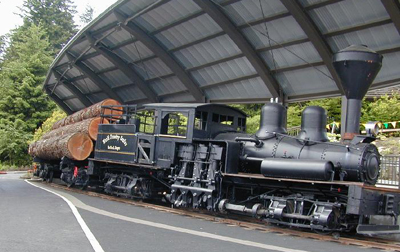

Last updated: 24 June, 2015
| Builder: | Lima |
| Build #: | 2172 |
| Date: | 1909 |
| Engine #: | 1 |
| Railroad: | Stimson Mill Co |
| Website: | https://worldforestry.org |
| Email: | info@worldforestry.org |
| Location: | Washington Park, World Forestry Center, 4033 SW Canyon Rd, Portland, OR 97221 |
| GPS: | 45.510088, -122.718305 |
| Phone: | 503-228-1367 |
| Status: | Display |
| Notes: | The Washington Park MAX light rail station (trimet.org/max) serves both the Portland Zoo as well as the World Forestry Center. The Max train station is about 500 feet from the locomotive |
Stimson Timber Company #1 is displayed at the World Forestry Center near the Portland Zoo. Built in 1909 for the Gig Harbor Timber Co. at Gig Harbor, WA, this 2-truck Shay went to the Stimson Timber Co. at Belfair, WA in 1913, and later to the Stimson Lumber Co. at Forest Grove, OR. It was donated to the City of Portland in 1955.
| Class: | |
| Gauge: | 4'-8½" |
| F.M.Whyte: | Shay2Tr |
| Drivers: | |
| Gear Ratio: | |
| Tractive Effort: | |
| Weight: | |
| Weight on Drivers: | |
| Length: | |
| Boiler: | |
| Cylinders: | |
| Top Speed: | |
| Horsepower: | |
| Fuel: | |
| Fuel Type: | |
| Water: | |
| Steam psi: |